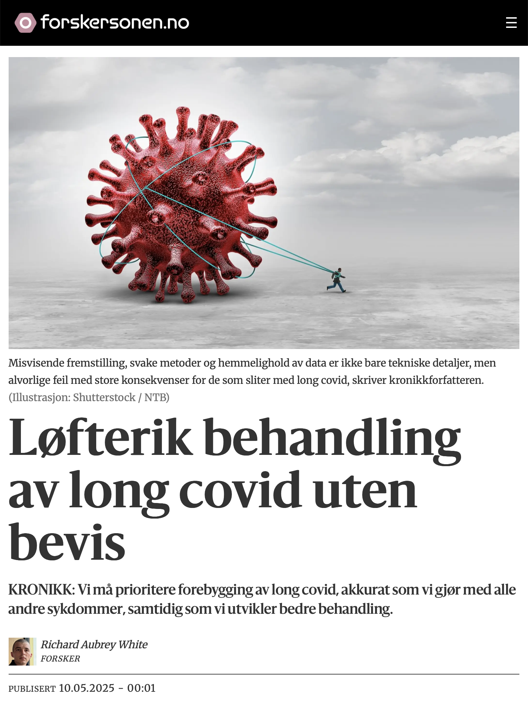

![]()
This is a translation of the original Norwegian op-ed, and discrepancies may exist.

Approximately 3–6 percent of coronavirus infections lead to long-lasting health problems, known as “long COVID.” With millions of coronavirus infections each year in Norway, we face a serious public health crisis manifested through increased sick leave, more deaths than expected among younger adults, and a significant increase in medical consultations due to exhaustion.
Hopeful study with serious weaknesses
Erna Solberg and the Conservative Party have acknowledged that long COVID may be an important cause of increased sick leave and made an election promise to improve treatment.
Despite the severity of the situation and the Conservative Party’s election promise, there is no documented effective treatment for long COVID.
Some researchers, some of whom have a background in controversial psychosocial theories about post-viral conditions, have proposed experimental psychosocial treatments as the solution.
A recent study by Tom Farmen Nerli and colleagues proposes treatment “based on a cognitive and behavioral approach.” The study has created hope, but a closer examination reveals serious methodological weaknesses.
Misleading results and questionable measurement methods
“Clinically significant” is a crucial concept when assessing treatment effect. It means that the treatment provides real, noticeable improvement in the patient’s health—not just a difference that can be measured statistically. It is therefore not enough to demonstrate a change; it must be large enough to have practical significance for quality of life and function.
The study by Nerli uses a scale for physical function (SF-36-PF) where participants themselves assess the extent to which their health limits them in daily activities such as climbing stairs, carrying groceries, or vacuuming.
In the analysis plan, written before the results were known, the authors state that an improvement of at least 10 points on this scale is necessary for a treatment to be considered clinically significant.
Misleading presentation of findings
In this study, the treatment group achieved on average only 9.2 points improvement—thus below the threshold value. They have indeed measured an effect, but according to the authors’ own criteria, it is not large enough to have practical significance.
Nevertheless, the authors present the treatment as clinically significant and effective in the article. This is clearly misleading.
Furthermore, the authors use a problematic definition of “healthy.” They consider patients healthy if they score 85 or higher on the SF-36-PF scale, regardless of age and gender. A score of 85 is typical for a healthy 60-year-old woman, but the participants in the study had an average age of 42 years. Thus, using a score of 85 as the “healthy” threshold leads to an artificially high proportion of “healthy” individuals.
Lack of data sharing prevents verification
Strong conclusions require openness and independent control. The authors promised in their data statement that anonymized data would be made available for scientific use. I requested an anonymized and limited dataset to be able to calculate real, age- and gender-adjusted recovery rates.
The dataset would contain only a few variables: Whether the participant received the intervention, whether they were healthy according to the authors’ definition, and whether they were healthy according to an age- and gender-adjusted definition at three time points.
The request was denied after six weeks. Akershus University Hospital HF believed the data were “sensitive personal information and subject to confidentiality,” despite no identifying information being requested.
Another justification was that “extraction of relevant variables and subsequent anonymization will also require some work effort from the researchers associated with the project.” This raises the question: Why was data sharing promised then?
Researchers must not promise openness they cannot deliver. Such broken promises weaken research credibility and undermine the principle of independent reproducibility.
How many actually recovered?
It was only after I complained to the journal JAMA Network Open that the authors published the age- and gender-adjusted recovery rates. These showed that only 8 percent of participants in the control group recovered after twelve months—a strikingly low proportion that should cause serious concern among clinicians and health authorities.
In the intervention group, the proportion was 29 percentage points higher. But since the participants themselves assessed the outcomes (for example, “Is your health such that it limits you in moderate activities such as vacuuming?”), and knew whether they received the intervention or not, it is unclear how much of the intervention’s modest effect is due to placebo effect and response bias.
This means that participants may have overestimated improvement because they expected an effect, or wanted to confirm the researchers’ assumptions. Objective measures, such as number of steps per day, would likely have shown even weaker results.
An unblinded psychosocial treatment with a recovery rate of only 29 percent on a subjective measure under ideal trial conditions should not be presented as a solution for a complex, multisystemic condition like long COVID.
On the contrary, this underscores the need for biomedical treatment strategies targeting, among other things, viral persistence, post-acute inflammation, autoimmunity, thrombosis, reactivation of latent viruses, dysbiosis, gut translocation, and mitochondrial dysfunction.
Need for greater openness and better methodology
Misleading presentation, weak methods, and secrecy of data are not just technical details, but serious errors with major consequences for those struggling with long COVID. Only honest and open science can form the basis for informed choices by patients, healthcare personnel, and politicians.
Until results can be confirmed through robust and independent research, we must be cautious about spreading hopes about experimental treatments.
The precautionary principle also suggests that we must prioritize prevention of long COVID, just as we do with all other diseases, while developing better treatment. Since long COVID is caused by an airborne virus, prevention must occur through better ventilation, air purification and use of FFP2 masks.
We owe both patients and society to demand openness and scientific integrity. Only in this way can we find the solutions that are needed.
About the author: Richard Aubrey White has a PhD in biostatistics from Harvard University. He is a researcher at the Norwegian Institute of Public Health, but does not write on behalf of the institute.